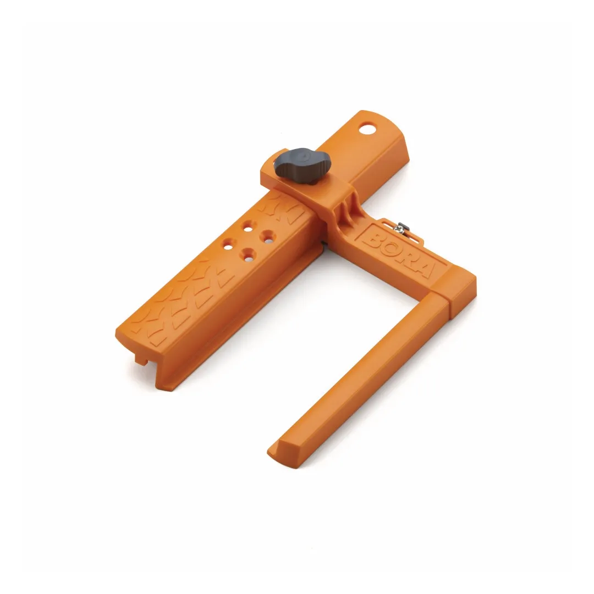
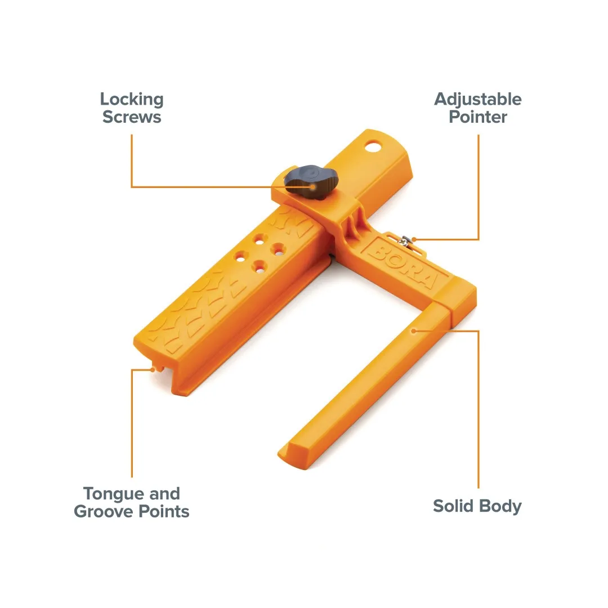
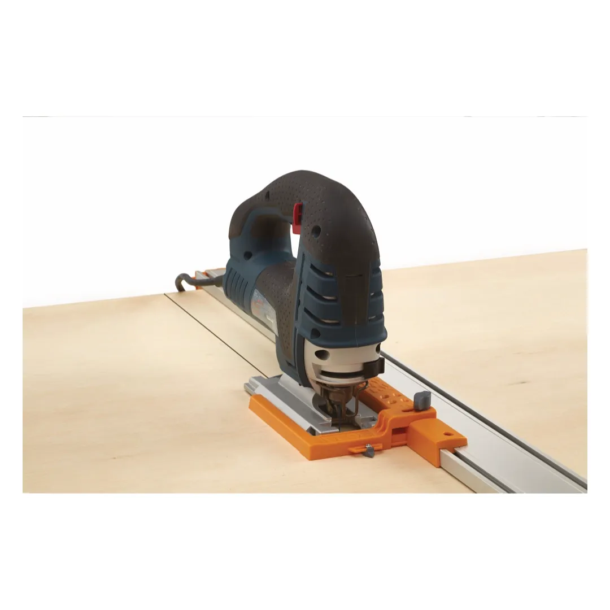
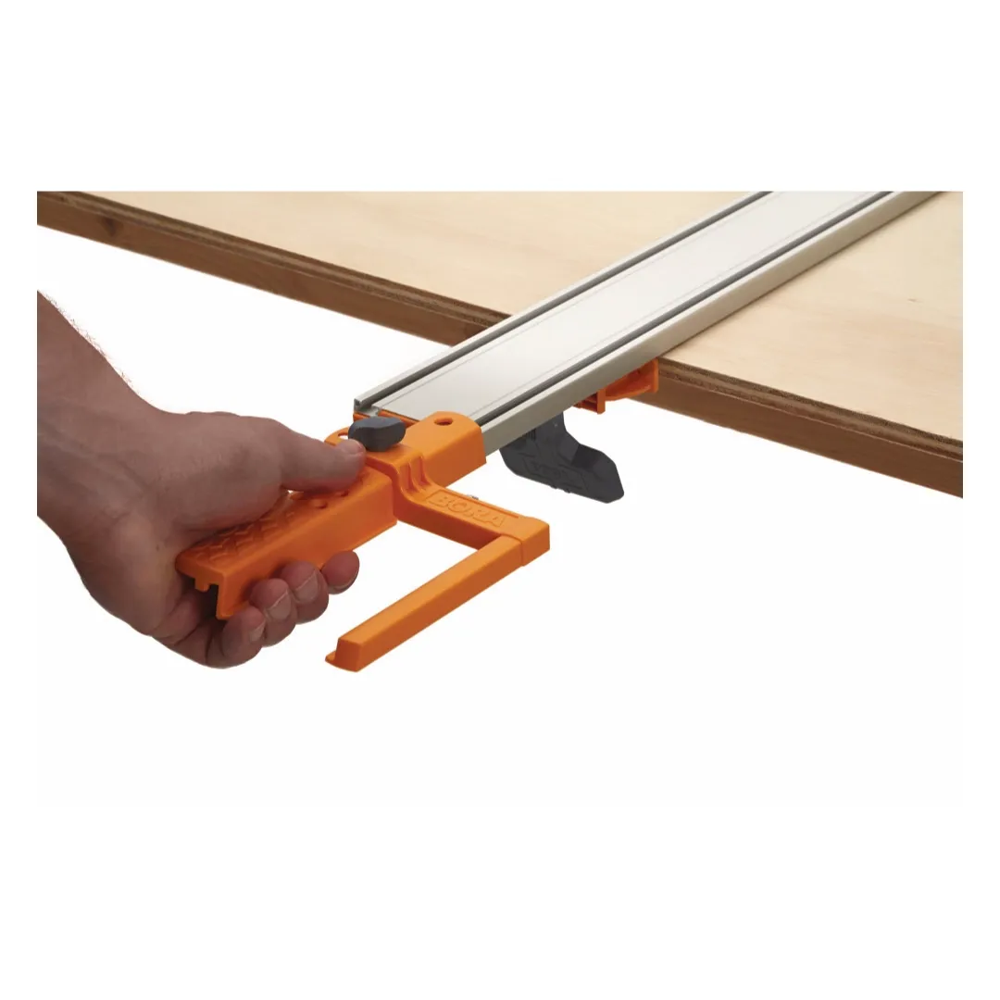
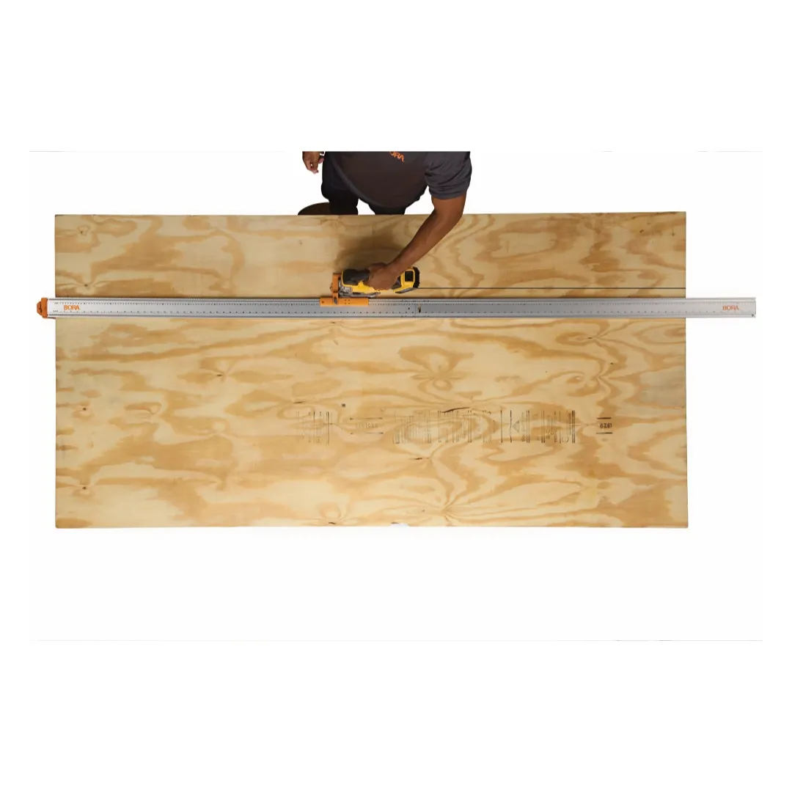
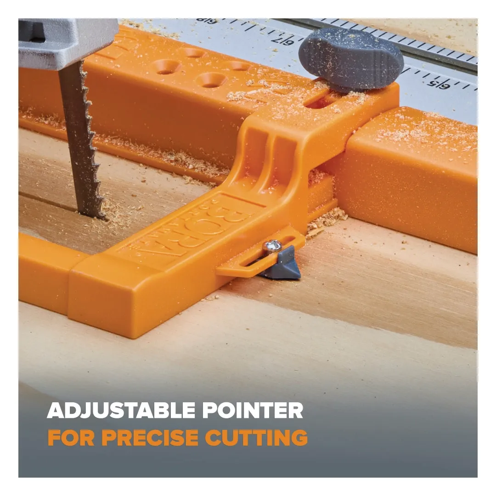
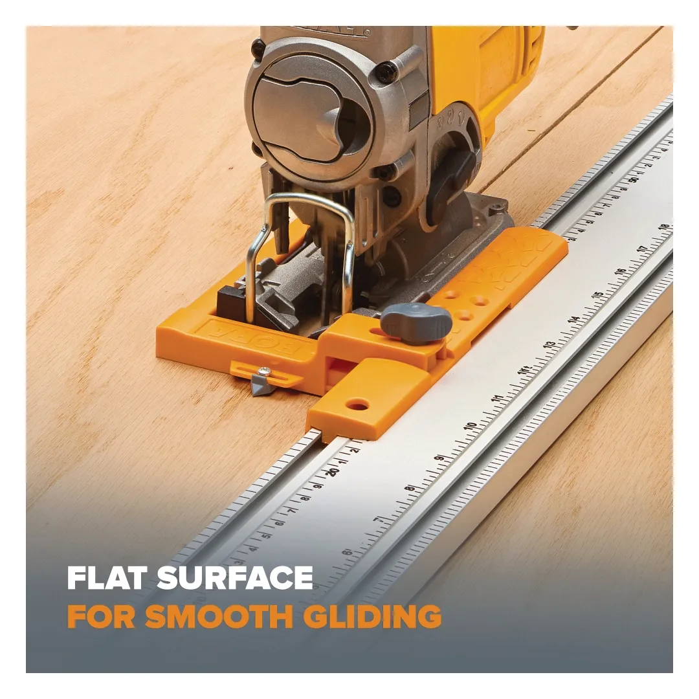
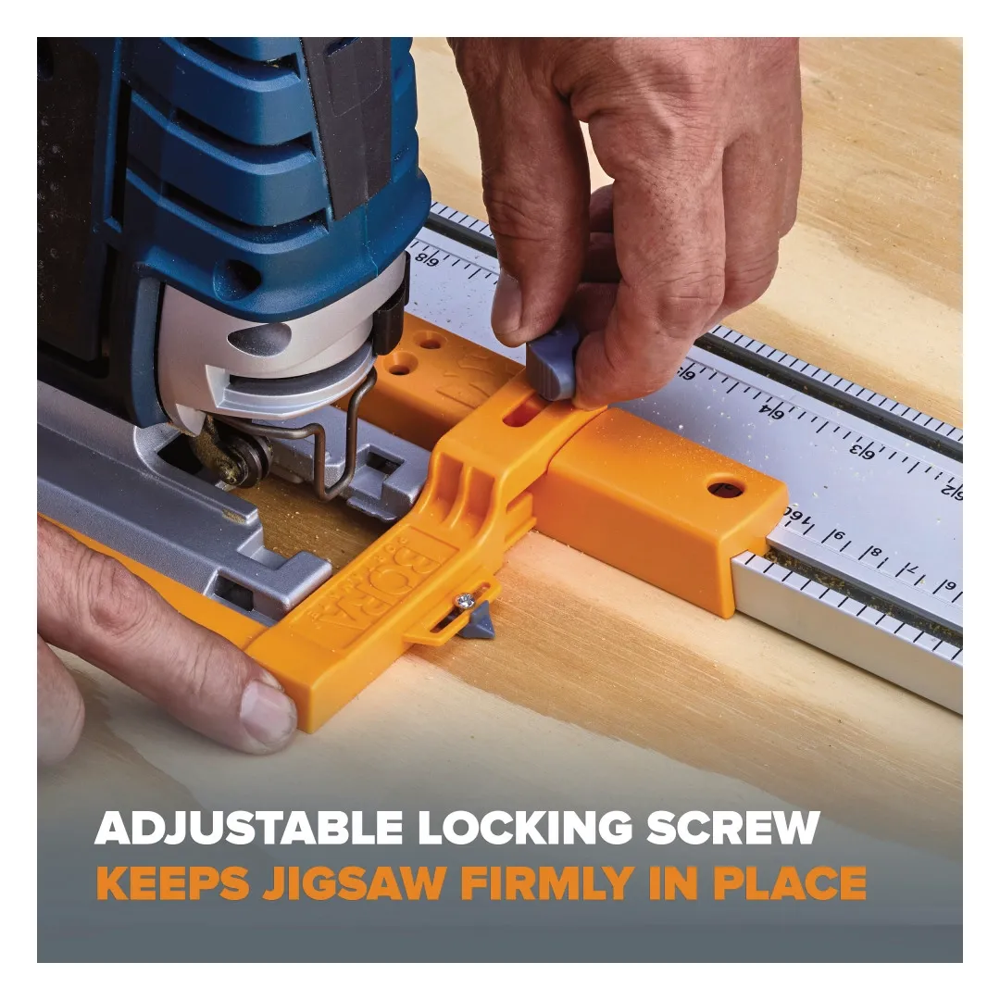
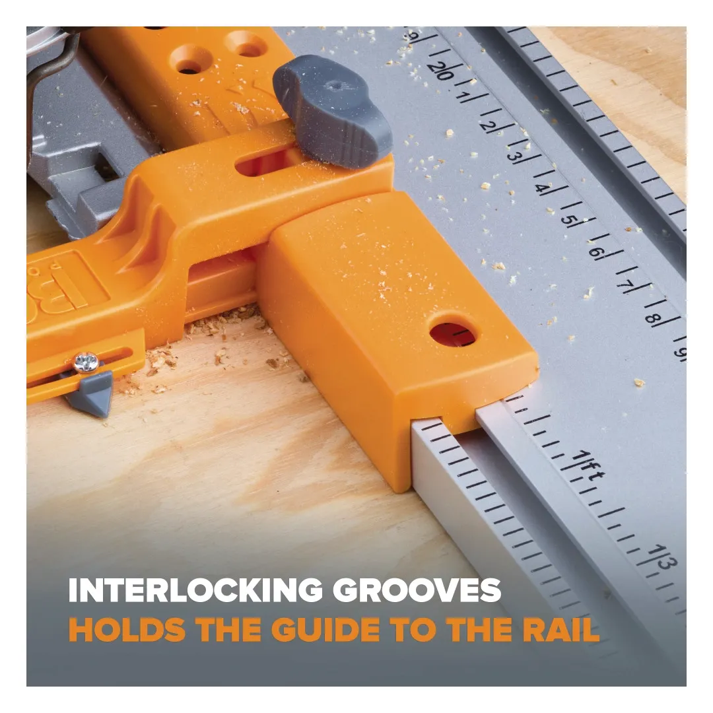

022542009









The BORA Jigsaw Guide is designed to help you achieve straight and controlled cuts when using a jigsaw. It works with clamp edge guides to improve accuracy and reduce uneven or drifting cuts.
Key Features
The guide is simple to set up and use, helping improve consistency when cutting sheet materials and boards. It is a practical addition for both workshop and on-site use.
| Compatibility: | WTX clamp edge system |
| Tool compatibility: | Most jigsaws |
| Adjustment: | Fully adjustable guide system |